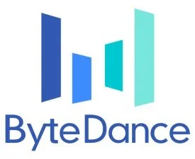

RSIHub
A research framework for principled agent self-improvement under frozen evaluators and declared mutation boundaries, with verifiable lineage for reproducibility and auditing.
PhD Student
University of Science and Technology of China
Research Intern @ BIGAI
I am a third-year PhD student at the University of Science and Technology of China, currently pursuing research as an intern at the Beijing Institute for General Artificial Intelligence (BIGAI), under the guidance of Professor Qi Liu and Researcher Zilong Zheng. I hold a bachelor's degree from Beihang University.
Open to collaboration. My research centers on reward modeling, LLM alignment, and continual learning. Feel free to reach out if you are interested in these topics.
“Toward language models that keep improving from their own experience — through better reward signals, robust alignment, and continual adaptation.”
Designing reliable reward models and preference-optimization methods that stay calibrated and aligned as the policy evolves beyond static training data (e.g., UAPO, SAVE).
Enabling models to acquire, retain, and update knowledge over time through knowledge editing and ever-improving memory systems (e.g., ICE, RAM).
* indicates equal contribution.
A research framework for principled agent self-improvement under frozen evaluators and declared mutation boundaries, with verifiable lineage for reproducibility and auditing.
A confidence-aware belief context graph that drives more deterministic reasoning in long-horizon agents.
University of Science and Technology of China
Beihang University
Beijing Institute for General Artificial Intelligence (BIGAI), Beijing, China
Beijing Institute for General Artificial Intelligence (BIGAI), Beijing, China

ByteDance · Commercialization Product & Technology, Beijing, China
Program Committee Member
ACL, EMNLP, NeurIPS
Beijing, China